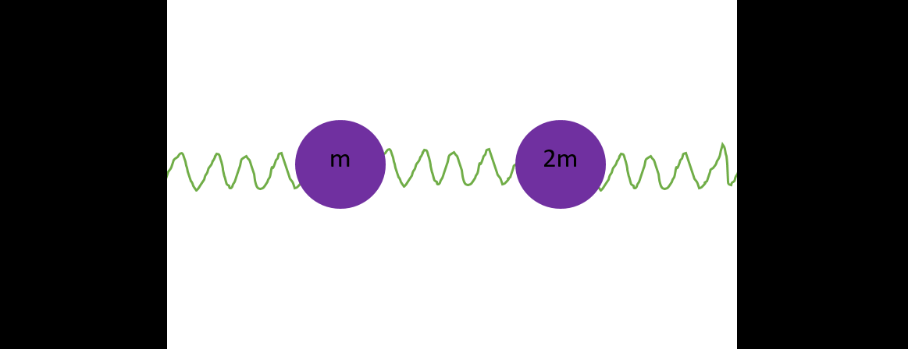

Matrices
Definition
A matrix is rectangular array of items. Matrices are usually names with capital letters and are often shown like this below.
This is an example of a n by m matrix. Matrices can play crucial roles in many problems like coupled oscillations, rigid body dynamics, ray transfer matrix analysis in optics, some problems that are solved for a limited number of objects need matrixes to be solved generally for N objects, ...
Sometimes the dimentions of the matrix is written in subscript of It's name, like below.
\[ A_{n \times m} = \begin{bmatrix}
a_{11} & a_{12} & a_{13} & & & & a_{1m} \\
a_{21} & a_{22} & a_{23} & . & . & . & a_{2m} \\
& . & & . & & & . \\
& . & & & . & & . \\
& . & & & & . & . \\
a_{n1} & a_{n2} & a_{n3} & . & . & . & a_{1m}
\end{bmatrix} \]
Some terminology
Column matrix: a matrix which is constructed by only on column and n rows.
Row matrix: a matrix which is contructed by only on row and m column.
Square matrix: when n = m the matrix is called a square matrix.
Binary matrix: each element is either zero or one. \(a_{ij}=0\) | \(a_{ij}=1\)
\(
A = \begin{bmatrix} a_{1} & a_{2} & a_{3} & . & . & . & a_{m} \end{bmatrix}
\)
,
\(
B = \begin{bmatrix} a_{1} \\ a_{2} \\ . \\ . \\ . \\ a_{n} \end{bmatrix}
\)
,
\(
C = \begin{bmatrix} 0 & 1 & 0 & 0 \\ 1 & 1 & 1 & 0 \\ 0 & 0 & 0 & 0 \\ 1 & 0 & 1 & 1 \end{bmatrix}
\)
Identity matrix: a square matrix usually shown with letter I, which \(I_{ij} = 0 ( i \neq j ) \) and \( I_{ii} = 1\)
\[
I_4 = \begin{bmatrix} 1 & 0 & 0 & 0 \\ 0 & 1 & 0 & 0 \\ 0 & 0 & 1 & 0 \\ 0 & 0 & 0 & 1 \end{bmatrix}
\]
Matrix operations
addition and subtraction
A and B must have same n and m to be added or subtracted.
\[(A + B)_{ij} = a_{ij} + b_{ij} \Rightarrow A_{n\times m} + B_{n\times m} = \begin{bmatrix}
a_{11} + b_{11} & a_{12} + b_{12} & a_{13} + b_{13} & & & & a_{1m} + a_{1m} \\
a_{21} + b_{21} & a_{22} + b_{22} & a_{23} + b_{23} & . & . & . & a_{2m} + a_{2m} \\
& . & & . & & & . \\
& . & & & . & & . \\
& . & & & & . & . \\
a_{n1} + a_{n1} & a_{n2} + a_{n2} & a_{n3} + a_{n3} & . & . & . & a_{1m} + a_{1m}
\end{bmatrix} \]
multipication
A's number of columns should be same as B's number of rows to multiply A by B.
let's assume the dimentions of A and B are given as this:
\[A = A_{s \times n} \]\[ B = B_{n \times k}\]
\[(A \cdot B)_{ij}=\sum_{z=1}^{n}a_{iz}b_{zj}\]
A times B might not be equal to B times A
If A is a square matrix then: \(A \cdot I = A\) and \(I \cdot A = A\)
Transposition
Transpose of a matrix A is shown by \(A^T\) and is defined as:
\[{A^T}_{ij} = A_{ji}\]
therefore transpose of an n by m matrix is an m by n matrix.
Important identity:
\[(AB)^T=B^TA^T\]
Proof:
we will prove the identity by showing that an arbitrary element of the left-side of equation is eqaul to the right-side's element in same position.
defining dimentions as following:
\(A = A_{s \times n}\) and \(B = B_{n \times k}\)
\[(AB)_{ij}^T = (AB)_{ji} = \sum_{z=1}^{n}A_{jz}B_{zi} = \sum_{z=1}^{n}B_{zi}A_{jz} = \sum_{z=1}^{n}{B^T}_{iz}{A^T}_{zj} = (B^TA^T)_{ij} \]
\[\Rightarrow (AB)^T=B^TA^T\]
Determinant
Determinant of a square matrix is a scalar value and is usually shown by \(|A|\) or \(det(A)\).
One way to define the determinant is the following:
First we define A^{ij} = the n-1 by n-1 matrix resulted in deleting the i-th row and j-th column.
there is recursive equation for det(A):
\[det(A) = a_{11} det(A^{11}) - a_{12} det(A^{12}) + ... + (-1)^{m+1} a_{1m} det(A^{1m})\]
or more generally you can choose the i-th row and write determinant like this:
\[det(A) = a_{i1} det(A^{i1}) - a_{i2} det(A^{i2}) + ... + (-1)^{m+1} a_{im} det(A^{im}) = \sum_{z=1}^{m}(-1)^{z+1}a_{iz}det(A^{iz})\]
or choosing the j-th column then:
\[det(A) = a_{1j} det(A^{1j}) - a_{2j} det(A^{2j}) + ... + (-1)^{n+1} a_{nj} det(A^{nj}) = \sum_{z=1}^{n}(-1)^{z+1}a_{zj}det(A^{zj})\]
the determinant is zero if and only if one or more rows/columns of the matrix is linearly dependent on other rows/column.
example:
\[ det(\begin{bmatrix}1 & 2 & 0 \\ -1 & 3 & 2 \\ 1 & -1 & 4\end{bmatrix}) =
1 \cdot det ( \begin{bmatrix}3 & 2 \\ -1 & 4\end{bmatrix} )
-2 \cdot det ( \begin{bmatrix}-1 & 2 \\ 1 & 4\end{bmatrix} )
+ 0 \cdot det ( \begin{bmatrix}-1 & 3 \\ 1 & -1\end{bmatrix} ) \]
\[=1 \times (3 \times 4 - ( - 2 ) ) + (-2) \times (-4 -2) = 14 + 12 = 26\]
Inversion
There is no division in matrix calculations but we can have something that performs almost similar.
Inverse of a square matrix A is denoted by \(A^{-1}\) which is a square matrix of same dimentions and has the following property:
\[A^{-1} \cdot A = A \cdot A^{-1} = I\]
The line above also implicates the fact that:
\[(A^{-1})^{-1} = A\]
Matrices that have a determinant of zero are not invertible.
Inverse of a matrix could be derived by the following equation:
\[A_{ij}^{-1} = \frac{(-1)^{i+j}}{det(A)}det(A^{ji})\]
\(A^{ij}\) is defined as it previously had been in last section.
example: \[ \begin{bmatrix} A & B \\ C & D \end{bmatrix} ^ {-1} = \frac{1}{AD - BC}\begin{bmatrix} D & - B \\ - C & A \end{bmatrix} \]
Inversion gives us alot of capabilities. Let's try solving linear equation systems with it.
\[ a_{11} x_1 + a_{12} x_2 + ... + a_{1m} x_m = y_1 \]
\[ a_{21} x_1 + a_{22} x_2 + ... + a_{2m} x_m = y_2 \]
\[ ... \]
\[ a_{n1} x_1 + a_{n2} x_2 + ... + a_{nm} x_m = y_m \]
This system of equation could be compacted into one matrix equation:
\[
\begin{bmatrix}
a_{11} & a_{12} & . & . & . & a_{1m} \\
a_{21} & a_{22} & & & & a_{2m} \\
. & & . & & & . \\
. & & & . & & . \\
. & & & & . & . \\
a_{11} & a_{12} & . & . & . & a_{nm}
\end{bmatrix}
\begin{bmatrix}x_1 \\ x_2 \\ . \\ . \\ . \\ x_m \end{bmatrix}
=
\begin{bmatrix}y_1 \\ y_2 \\ . \\ . \\ . \\ y_m\end{bmatrix} \]
\[A\overrightarrow{x} = \overrightarrow{y}\]
where \(\overrightarrow{x}\) and \(\overrightarrow{y}\) are m-dimentional vectors.
\(\overrightarrow{x}\) could be found by multiplying the inverse of A to both sides.
be careful: we are multiplying A by both sides not both sides by A. these are different.(\(AB = BA\) is not always a correct statement)
Coupled oscillations
Assume the following system constructed with two point masses with mass m and 2m and three springs with spring constants of k.

We define \(x_1\) and \(x_2\) as the displacement of left and right mass to left.
Equations of motion:
\[ m\ddot{x_1} = -2kx_1 + kx_2 \]
\[ 2m\ddot{x_2} = -2kx_2 + kx_1\]
which could be written as:
\[
\begin{bmatrix}\ddot{x_1} \\ \ddot{x_2}\end{bmatrix} = \frac{k}{m} \begin{bmatrix} -2 & 1 \\ -1 & \frac{1}{2} \end{bmatrix} \begin{bmatrix} x_1 \\ x_2 \end{bmatrix}
\]
consider that the system is oscillating in a mode which means each mass is oscillating harmonically with some frequency.
\[ -\omega^2\begin{bmatrix}x_1 \\ x_2\end{bmatrix}\ = \frac{k}{m} \begin{bmatrix} -2 & 1 \\ -1 & \frac{1}{2} \end{bmatrix} \begin{bmatrix} x_1 \\ x_2 \end{bmatrix} \]
\[ \Rightarrow -\omega^2\begin{bmatrix}1 & 0 \\ 0 & 1 \end{bmatrix}\begin{bmatrix}x_1 \\ x_2\end{bmatrix} = \frac{k}{m} \begin{bmatrix} -2 & 1 \\ -1 & \frac{1}{2} \end{bmatrix} \begin{bmatrix} x_1 \\ x_2 \end{bmatrix} \]
\[ \Rightarrow 0 = \begin{bmatrix} \omega^2 - 2 \frac{k}{m} & \frac{k}{m} \\ -\frac{k}{m} & \omega^2+\frac{k}{2m} \end{bmatrix} \begin{bmatrix} x_1 \\ x_2 \end{bmatrix} = A \overrightarrow{x}\]
\[ A\overrightarrow{x} = 0 \]
If det(A) is not zero then we can multiply each side by \(A^{-1}\) which would give \(\overrightarrow{x} = 0\) and that is an obvious mode which we are not intending to find.
Other modes would occur when det(A) is zero. which means:
\[(\omega^2-2\frac{k}{m})(\omega^2+\frac{k}{2m}) + \frac{k^2}{m^2} = 0\]
\[\omega^4 - \frac{3k}{2m}\omega^2 = 0 \Rightarrow \omega_1 = \sqrt{\frac{3k}{2m}} , \omega_2 = 0 \]
\(\omega_2\) being zero indicates presence of a linear mode. Thus the general solution regarding these modes for this system is:
\[\begin{bmatrix}x_1 \\ x_2\end{bmatrix} = \begin{bmatrix}A_1 \\ A_2\end{bmatrix}cos{(t\sqrt{\frac{3k}{2m}} + \phi)} + \begin{bmatrix}B_1 \\ B_2\end{bmatrix} (Ct + D) \]
By substituding each mode into the motion equation we will find the ration between amplitudes
\[ \begin{bmatrix}x_1 \\ x_2\end{bmatrix} = \begin{bmatrix}2 \\ 1\end{bmatrix}Acos{(t\sqrt{\frac{3k}{2m}} + \phi )} + \begin{bmatrix}1 \\ 2\end{bmatrix} (Ct + D) \]
Eigen value and eigen vector
Assume there is a square matrix A, and we want to find every \( \overrightarrow{x} \) that will hold the following equation for some number \lambda:
\[A\overrightarrow{x}=\lambda \overrightarrow{x}\]
Keep in mind that only the direction of \( \overrightarrow{x} \) matters and parrallel vectors are considered the same in this problem.
The set of \(\overrightarrow{x}\) holding the equation are called eigen-vectors and a same-sized set of lambdas are assigned to them which is called eigen-values.
finding eigen values
rewriting the equation with identity matrix will give the following equation:
\[A\overrightarrow{x} = \lambda I \overrightarrow{x}\]
\[(A-\lambda I)\overrightarrow{x}=0\]
Now we can assert that \(\overrightarrow{x} = 0\) or if it is not; then A is not invertible.
We are looking for non-zero vectors, therefore, A should not be invertible which means det(A) = 0
If A is an n by n matrix then an equation of degree n will be derived, hence, you will find n eigen value.
finding eigen vectors
Finding eigen vectors is pretty straigt forward, insert each eigen value and sovle for x; you can the ratio between x's elements which is enough.
Power
How can we calculate \(A^k\) when A is an \(n \times n\) matrix?
Let's First find something interesting. Let's define an \(n \times n\) matrix Q. Q is constructed by putting the column-matrices \(v_1\), \(v_2\), ..., \(v_n\).
\[Q_{n \times n} = \begin{bmatrix} \overrightarrow{v_1} && \overrightarrow{v_2} && ... && \overrightarrow{v_n} \end{bmatrix}\]
Now let's calculate AQ:
\[AQ = \begin{bmatrix}A\overrightarrow{v_1} && A\overrightarrow{v_2} && ... && A\overrightarrow{v_n} \end{bmatrix} \]
\[= \begin{bmatrix} \lambda_1\overrightarrow{v_1} && \lambda_2\overrightarrow{v_2} && ... && \lambda_n\overrightarrow{v_n} \end{bmatrix} \]
\[= \begin{bmatrix} \overrightarrow{v_1} && \overrightarrow{v_2} && ... && \overrightarrow{v_n} \end{bmatrix} \begin{bmatrix} \lambda 1 & 0 & 0 & & 0 \\ 0 & \lambda_2 & 0 & ... & 0 \\ 0 & 0 & \lambda_3 & & 0 \\ & & . & & \\ & & . & & \\ & & . & & \\ 0 & 0 & 0 & ... & \lambda_n \end{bmatrix} \]
Now we define the diagonal matrix \(\Lambda\):
\[\Lambda_{ij} = \begin{cases}\lambda_i & i = j \\ 0 & i \neq j \end{cases}\]
So we can compact previous result in a small equation:
\[AQ = Q\Lambda\]
And with this result we can calculate A to any power with ease.
\[A^k = (Q\Lambda Q^{-1})^k\]
\[=(Q\Lambda Q^{-1}) (Q\Lambda Q^{-1}) ... (Q\Lambda Q^{-1})\]
\[=Q \Lambda ( Q^{-1} Q ) \Lambda ( Q^{-1} Q ) ... ( Q^{-1} Q ) \Lambda Q^{-1}\]
\[=Q \Lambda I \Lambda I ... \Lambda Q^{-1} = Q \Lambda ^ k Q^{-1}\]
\[= Q \begin{bmatrix} \lambda_1^k & 0 & 0 & & 0 \\ 0 & \lambda_2^k & 0 & ... & 0 \\ 0 & 0 & \lambda_3^k & & 0 \\ & & . & & \\ & & . & & \\ & & . & & \\ 0 & 0 & 0 & ... & \lambda_n^k \end{bmatrix} Q ^ {-1} \]
Example problem